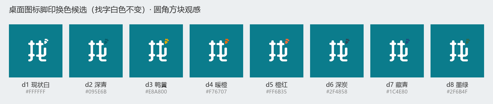
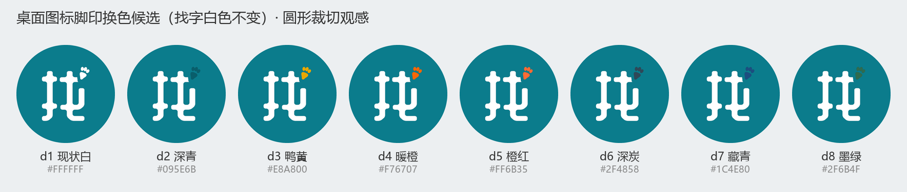

| 问题 | 结论 | 依据 |
|---|---|---|
| ① 登录页图标换了吗 | 没换 | 登录页 Logo 至今是几何占位：login_screen.dart 的 _BrandHeader 用 Icons.travel_explore（放大镜地球）顶在 72dp 浅青圆里，代码里挂着 TODO(M4-4) 等待接入正式资产。上一轮脚印替换只覆盖 SVG 资产与底部导航，没动登录页。 |
| ② 发布键尺寸不一致？ | 名义一致，视觉偏小 | 四个键名义尺寸都是 24dp（home_shell.dart 发布键 _duckSize = 24，其余 Icon size: 24）。但丫圈/消息/我的三个 Material 图标字形几乎撑满 24dp；发布键是「双波纹圈 + 中央圆盘」的 inverse 结构，波纹圈线宽在 24dp 下仅约 0.8dp 几乎看不见，视觉重心只剩中央约 10.6dp 的小圆盘 —— 所以看起来明显小一圈。另外 2026-11-01 真机走查曾裁定「发布键不放大、与其他键同档」，是否推翻该裁定由你定。 |
| ③ 桌面图标换非白色 | 已定方向 | 真实桌面图标（build_android_foonote.py 生成 mipmap）= teal 底（#0B7C8C）+ 白色黄油体「找」字 + 右上角脚印（现状脚印也是白色，靠 20px 隔离带与找字区分）。已裁定：找字白色不变、整体结构不动，只换右上角脚印的填充色。候选色在下方第四节（正式出包脚本同源渲染）。 |


build_android_foonote.py 已拆「找字白层 + 脚印色层」并加 FP_COLOR 常量，全密度 mipmap 已重生成；release 出包后真机复验三处。本页存档备查。